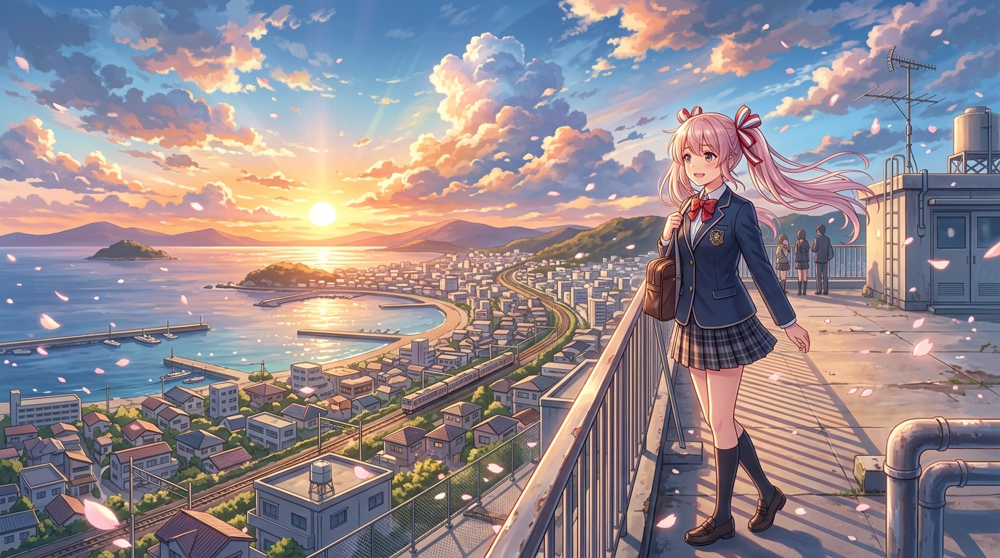
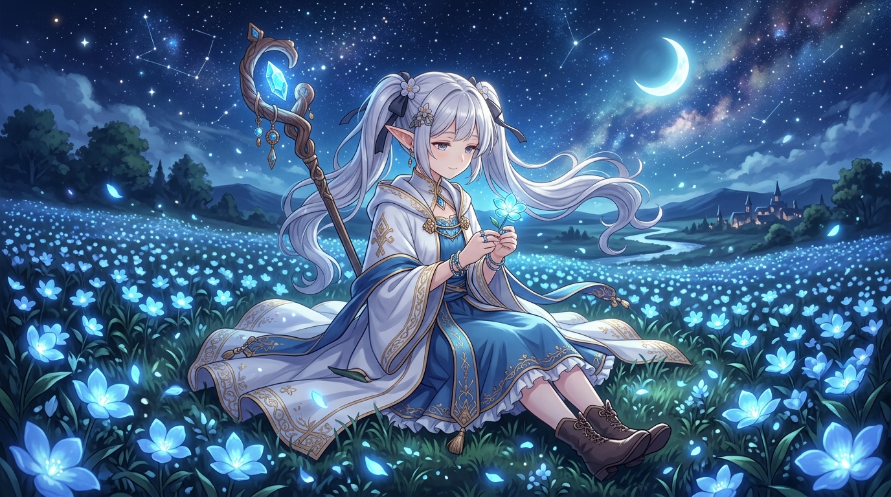
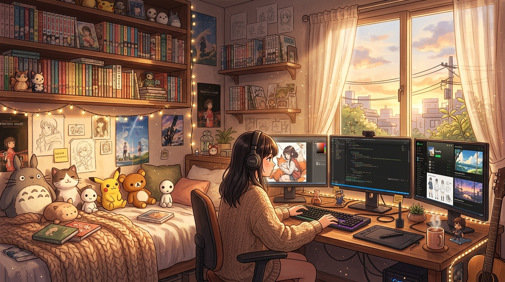

《葬送的芙莉莲》：时间的厚度与微小羁绊的长歌
千年精灵的一生漫长如恒星，而人类的寿命不过白驹过隙。当欣梅尔死后，芙莉莲才真正踏上重新理解人类情感的旅程。这部作品用最轻柔平缓的叙事笔触，治愈了现代人内心的浮躁与焦虑。
芙莉莲：「即使只有百分之一的意义，如果能让你露出笑容，那便是值得去追寻的魔法。」


千年精灵的一生漫长如恒星，而人类的寿命不过白驹过隙。当欣梅尔死后，芙莉莲才真正踏上重新理解人类情感的旅程。这部作品用最轻柔平缓的叙事笔触，治愈了现代人内心的浮躁与焦虑。

屏幕里是正在跑测试的 Rust 代码，耳机里是轻柔的 Anime Lofi 节拍，桌角是一杯热气腾腾的奶茶与吉卜力龙猫抱枕。如何打造一个兼具极客效率与满满 ACG 治愈感的心流创作空间？
从《言叶之庭》雨滴打在翠绿枫叶上的透亮反射，到《天气之子》中撕裂云层洒向东京街头的金色体积光（Volumetric Light）。探索如何用 GLSL 在浏览器端复现日系动画天花板级的空气感与通透感。